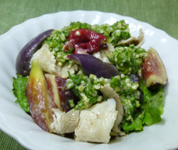

豚肉の冷しゃぶとイチジクの
オクラソース
オクラソース
- 調理時間：30 分
- （一人当たり）
- カロリー：308kcal
- たんぱく質：20.7g
- 脂質：16.2g
- 塩分：1.8g


＜２人分＞
- 豚肉（しゃぶしゃぶ用）
- 200g
- ナス
- 1本
- イチジク
- 2個
- オクラ
- 6本
- 梅干し
- 1～2個


- 湯を沸かし、豚肉をサッと加熱してすぐに冷水に放す。
ザルにあげ、キッチンペーパーで水分を切っておく。 -
ナスは縦に切り目をいれてラップを巻き、電子レンジで加熱した後、食べやすい大きさに切る。
イチジクはくし切りにして塩水にさっとくぐらせ、変色を防ぐ。 - オクラは、塩をまぶして擦り合わせ、うぶげを除いた後、サッとゆがく。
- ③のオクラと種を取り除いた梅干しを包丁で叩き、舌触りよく仕上げる。
- 豚肉、ナス、イチジクをお皿に盛り付け、オクラのソースをかける。
豚肉の冷しゃぶとイチジクのオクラソース
暑さは残っているけれど涼しい風がそよぎ始めるころは、夏の疲れから体調を崩しやすいものです。
夏の疲れに効果的な食材はビタミンB1を多く含む豚肉。イチジクはたんぱく質分解酵素がありますので食べ合わせは抜群。ねばねば食材のオクラは食物繊維がたっぷりですし、梅干しに含まれるクエン酸には代謝をスムーズにする働きがあります。疲労物質を体内に溜め込まないで体外に排泄させ、季節の変わるこの時期も体力を落とさない食べ方を意識しましょう。